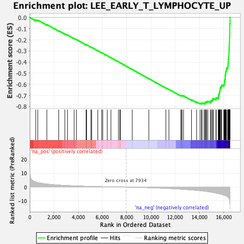
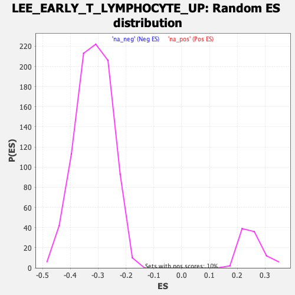

| | | Dataset | DE_genes2 |
| Phenotype | NoPhenotypeAvailable |
| Upregulated in class | na_neg |
| GeneSet | LEE_EARLY_T_LYMPHOCYTE_UP |
| Enrichment Score (ES) | -0.777252 |
| Normalized Enrichment Score (NES) | -2.4553645 |
| Nominal p-value | 0.0 |
| FDR q-value | 0.0 |
| FWER p-Value | 0.0 |
Table: GSEA Results Summary

Fig 1: Enrichment plot: LEE_EARLY_T_LYMPHOCYTE_UP
Profile of the Running ES Score & Positions of GeneSet Members on the Rank Ordered List
| PROBE | GENE SYMBOL | GENE_TITLE | RANK IN GENE LIST | RANK METRIC SCORE | RUNNING ES | CORE ENRICHMENT | | 1 | SCRN1 | | | 491 | 3.727 | -0.0209 | No |
| 2 | ADA | | | 662 | 3.283 | -0.0234 | No |
| 3 | HHIP | | | 1410 | 2.261 | -0.0634 | No |
| 4 | RCAN1 | | | 2387 | 1.500 | -0.1192 | No |
| 5 | GFI1 | | | 2896 | 1.242 | -0.1471 | No |
| 6 | CXXC5 | | | 3113 | 1.149 | -0.1575 | No |
| 7 | TNFRSF21 | | | 3663 | 0.945 | -0.1886 | No |
| 8 | GNA15 | | | 3850 | 0.880 | -0.1978 | No |
| 9 | LDLRAD4 | | | 4645 | 0.651 | -0.2446 | No |
| 10 | AEBP1 | | | 4695 | 0.639 | -0.2460 | No |
| 11 | TFDP2 | | | 5049 | 0.558 | -0.2662 | No |
| 12 | MYB | | | 5112 | 0.540 | -0.2686 | No |
| 13 | TUBB | | | 5614 | 0.424 | -0.2981 | No |
| 14 | TUBB4B | | | 5933 | 0.359 | -0.3166 | No |
| 15 | SLC1A4 | | | 6025 | 0.341 | -0.3213 | No |
| 16 | PALLD | | | 6397 | 0.264 | -0.3432 | No |
| 17 | RAG1 | | | 6697 | 0.202 | -0.3609 | No |
| 18 | RAPGEF5 | | | 7315 | 0.095 | -0.3982 | No |
| 19 | CENPW | | | 7436 | 0.075 | -0.4054 | No |
| 20 | SYK | | | 7474 | 0.070 | -0.4074 | No |
| 21 | RUFY3 | | | 8458 | -0.086 | -0.4670 | No |
| 22 | PON1 | | | 9826 | -0.407 | -0.5492 | No |
| 23 | FAIM | | | 11231 | -0.894 | -0.6325 | No |
| 24 | NLGN4X | | | 11483 | -1.000 | -0.6454 | No |
| 25 | CD99 | | | 12468 | -1.461 | -0.7017 | No |
| 26 | E2F2 | | | 12533 | -1.492 | -0.7020 | No |
| 27 | LETM1 | | | 12562 | -1.510 | -0.7001 | No |
| 28 | E2F8 | | | 12689 | -1.584 | -0.7040 | No |
| 29 | HMGB3 | | | 13350 | -1.994 | -0.7393 | No |
| 30 | E2F7 | | | 13768 | -2.300 | -0.7592 | No |
| 31 | NEK2 | | | 14051 | -2.552 | -0.7702 | No |
| 32 | TYMS | | | 14161 | -2.652 | -0.7705 | Yes |
| 33 | KIF20A | | | 14222 | -2.716 | -0.7676 | Yes |
| 34 | LRR1 | | | 14381 | -2.866 | -0.7704 | Yes |
| 35 | PTTG1 | | | 14464 | -2.952 | -0.7683 | Yes |
| 36 | GSE1 | | | 14485 | -2.973 | -0.7624 | Yes |
| 37 | CENPU | | | 14542 | -3.039 | -0.7585 | Yes |
| 38 | GALNT7 | | | 14605 | -3.117 | -0.7548 | Yes |
| 39 | UBE2T | | | 14697 | -3.240 | -0.7526 | Yes |
| 40 | MCM4 | | | 14906 | -3.510 | -0.7568 | Yes |
| 41 | CDCA3 | | | 14921 | -3.539 | -0.7492 | Yes |
| 42 | MCM2 | | | 15006 | -3.658 | -0.7455 | Yes |
| 43 | CDC25A | | | 15082 | -3.764 | -0.7410 | Yes |
| 44 | CKS2 | | | 15086 | -3.767 | -0.7322 | Yes |
| 45 | CEP128 | | | 15167 | -3.879 | -0.7278 | Yes |
| 46 | GGH | | | 15362 | -4.223 | -0.7294 | Yes |
| 47 | CPVL | | | 15384 | -4.263 | -0.7205 | Yes |
| 48 | CEP70 | | | 15552 | -4.586 | -0.7197 | Yes |
| 49 | GINS1 | | | 15564 | -4.619 | -0.7092 | Yes |
| 50 | FANCI | | | 15588 | -4.678 | -0.6994 | Yes |
| 51 | AURKA | | | 15607 | -4.737 | -0.6892 | Yes |
| 52 | CCNB1 | | | 15643 | -4.796 | -0.6798 | Yes |
| 53 | OIP5 | | | 15659 | -4.836 | -0.6691 | Yes |
| 54 | UHRF1 | | | 15683 | -4.875 | -0.6588 | Yes |
| 55 | RRM2 | | | 15702 | -4.911 | -0.6481 | Yes |
| 56 | UBE2C | | | 15704 | -4.913 | -0.6364 | Yes |
| 57 | BIRC5 | | | 15741 | -4.998 | -0.6266 | Yes |
| 58 | CDK1 | | | 15810 | -5.156 | -0.6184 | Yes |
| 59 | CCNB2 | | | 15832 | -5.225 | -0.6072 | Yes |
| 60 | MPP1 | | | 16000 | -5.658 | -0.6037 | Yes |
| 61 | KIF2C | | | 16061 | -5.848 | -0.5934 | Yes |
| 62 | ATAD2 | | | 16065 | -5.853 | -0.5795 | Yes |
| 63 | KIF18B | | | 16087 | -5.923 | -0.5666 | Yes |
| 64 | PRC1 | | | 16103 | -5.960 | -0.5532 | Yes |
| 65 | CRNDE | | | 16128 | -6.044 | -0.5402 | Yes |
| 66 | MELK | | | 16129 | -6.045 | -0.5257 | Yes |
| 67 | BUB1 | | | 16142 | -6.084 | -0.5118 | Yes |
| 68 | DIAPH3 | | | 16163 | -6.183 | -0.4982 | Yes |
| 69 | PRR11 | | | 16177 | -6.259 | -0.4840 | Yes |
| 70 | RAD51AP1 | | | 16221 | -6.439 | -0.4712 | Yes |
| 71 | DTL | | | 16230 | -6.481 | -0.4561 | Yes |
| 72 | BUB1B | | | 16335 | -7.102 | -0.4454 | Yes |
| 73 | DSCC1 | | | 16359 | -7.253 | -0.4294 | Yes |
| 74 | NUSAP1 | | | 16374 | -7.420 | -0.4125 | Yes |
| 75 | NUF2 | | | 16382 | -7.475 | -0.3950 | Yes |
| 76 | CDCA2 | | | 16385 | -7.530 | -0.3771 | Yes |
| 77 | KIF11 | | | 16409 | -7.860 | -0.3596 | Yes |
| 78 | NEIL3 | | | 16430 | -8.045 | -0.3416 | Yes |
| 79 | CENPA | | | 16438 | -8.139 | -0.3225 | Yes |
| 80 | TTK | | | 16444 | -8.189 | -0.3031 | Yes |
| 81 | KIF15 | | | 16449 | -8.254 | -0.2836 | Yes |
| 82 | PBK | | | 16458 | -8.487 | -0.2637 | Yes |
| 83 | CDKN3 | | | 16463 | -8.532 | -0.2435 | Yes |
| 84 | MCM10 | | | 16471 | -8.676 | -0.2231 | Yes |
| 85 | DLGAP5 | | | 16482 | -9.145 | -0.2018 | Yes |
| 86 | MKI67 | | | 16483 | -9.193 | -0.1798 | Yes |
| 87 | TOP2A | | | 16497 | -9.873 | -0.1569 | Yes |
| 88 | KIF14 | | | 16503 | -10.060 | -0.1331 | Yes |
| 89 | NCAPG | | | 16504 | -10.079 | -0.1089 | Yes |
| 90 | CEP55 | | | 16508 | -10.710 | -0.0834 | Yes |
| 91 | ASPM | | | 16510 | -10.824 | -0.0575 | Yes |
| 92 | NDC80 | | | 16527 | -12.233 | -0.0292 | Yes |
| 93 | HMMR | | | 16528 | -12.240 | 0.0002 | Yes |
Table: GSEA details [plain text format]

Fig 2: LEE_EARLY_T_LYMPHOCYTE_UP: Random ES distribution
Gene set null distribution of ES for LEE_EARLY_T_LYMPHOCYTE_UP